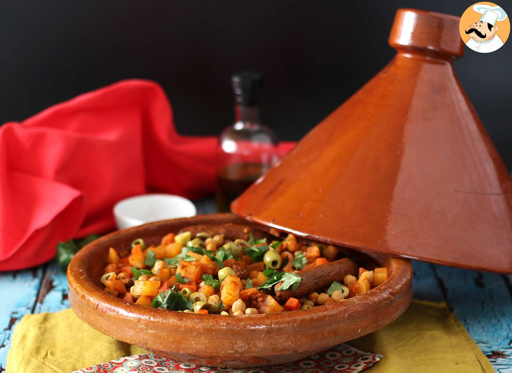

Tajin

Moroccan Chicken Tagine
Chicken tagine is a traditional Moroccan dish of chicken pieces braised with spices, garlic, onion, olives, and
preserved lemons. It’s company-worthy yet easy to throw together.
Ingredients
- 1 teaspoon paprika
- 1 teaspoon ground cumin
- ¼ teaspoon cayenne pepper
- ½ teaspoon ground ginger
- ½ teaspoon ground coriander
- ¼ teaspoon ground cinnamon
- 1 lemon
- 5 cloves garlic, minced
- 8 bone-in, skin-on chicken thighs (about 4 pounds),
trimmed of excess skin and fat (see note)
- Salt and ground black pepper
- 1 tablespoon olive oil
- 1 large yellow onion, halved and cut into ¼-in-thick slices
- 2 tablespoons all-purpose flour
- 1¾ cups chicken broth
- 2 tablespoons honey
- 2 large or 3 medium carrots, peeled and cut crosswise into
½-inch-thick coins
- ½ cup Greek cracked green olives, pitted and halved (see note)
- 2 tablespoons chopped fresh cilantro leaves
Steps
- Servings: 4 to 6
- Prep Time: 15 Minutes
- Cook Time: 45 Minutes
- Total Time: 1 Hour